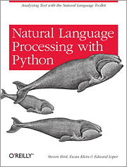

100.130: Language and
Computer
Hyopil Shin (Dept. of Linguistics, Seoul National University)
hpshin@snu.ac.kr, http://knlp.snu.ac.kr
Tue/Thu 11:00~12:15
T.A: TBA


(http://www.theverge.com/2016/3/11/11208078/lee-se-dol-go-google-kasparov-jennings-ai)
Course Description
This course
provides an introduction to Language and Computer in terms
of preliminaries for deep learning-based Computational
Linguistics and Natural Language Processing (NLP). Text
Processing occupies the core of NLP, which inevitably
comes with massive data collection, delicate cleaning and
efficient handling. The first part of the class
focuses on the data preparation including data collection
and cleaning and the second part covers various topics
from traditional NLP. Although currently deep learning methodologies
applied to NLP prevail, traditional notions and
theoretical background are still essential to text
processing. We will take advantage of modules from various
python and related resources. Through lectures and
programming assignments students will learn the necessary
data processing tricks and theoretical background for
making NLP work on practical problems.
Updates
- Please install python3.x, nltk, and jupyter notebook
- Get ready for Google
colab!
Useful Sites
Textbook
Speech
and Language Processing (3rd ed. Draft) by Dan
Jurafsky and James H. Martin

Natural Language
Processing with Python by Steven Bird, Ewan Klein,
and Edward Loper
Syllabus
| Date | Topics | Related Materials
and
Resources |
Assignments | |
| 1 | 9/1-9/7 |
Introduction to Language and Computer
|
Python: Google Colab: |
Install Python 3.x and
Natural Language
Tool Kit with Python |
| 2 | 9/8-9/14 | Data Preparation
|
BeautifulSoup Documentation Regex: |
|
| 3 | 9/15-9/21 | Data Preprocessing |
Study
|
|
| 4 | 9/22-9/28 | Data Preprocessing |
Seaborn:
statistical data visualiazation |
|
| 5 | 9/29-10/5 |
Regular Expressions, Text Normalization, Edit Distance
|
NLP-DataSets: NLTK:
|
|
| 6 | 10/6-10/12 |
Regular Expressions, Text Normalization, Edit Distance |
Regex: NLTK: |
|
| 7 | 10/13-10/19 | Language Modeling with N-Grams |
|
|
| 8 | 10/20-10/26 | Language
Modeling with N-Grams
s |
Learning
NLP Language Models with Real Data |
|
| 9 | 10/27-11/2 | s | Visual
Information Theory Information Theory |
|
| 10 | 11/3-11/9 | Naive Bayes Classification |
|
|
| 11 | 11/10-11/16 |
Linear
Regression and Logistic
Regression |
Linear
Regression From Scratch with Python Logistic Regression for Machine Learning |
|
| 12 | 11/17-11/23 |
Euclidean Distance, Cosine Similarity and Jaccard Similarity |
|
|
| 13 | 12/1-12/7 |
Sebastian Ruder의 On word Embeddings Part1, 2, 3, 4:
|
Word Embeddings |
|
| 14 | 12/8-12/14 |
Sebastian Ruder의 On word Embeddings Part1, 2, 3, 4:
|
Word Embeddings | |
| 15 | 12/15-12/21 | Final Test |